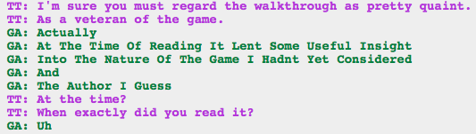

MORE DRAMATIC IRONY!
And also aw, Kanaya’s crush is so cute.
I have yet to get to why Kanaya doesn’t want to tell Rose that she read the walkthrough at the beginning of the troll session. I guess the timeline is a bit weird, but why would Kanaya be so cagey about it?